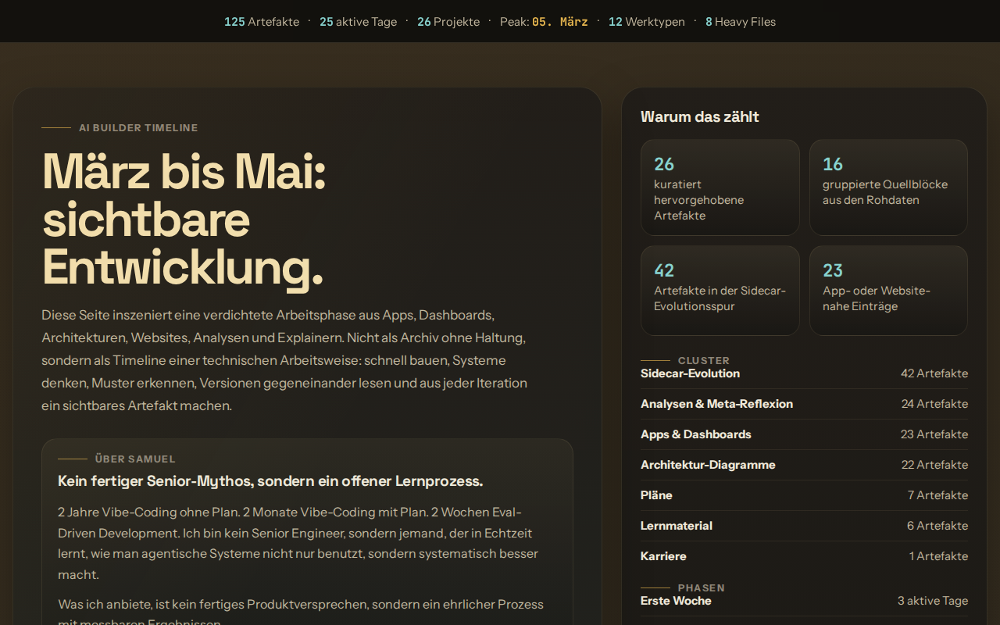
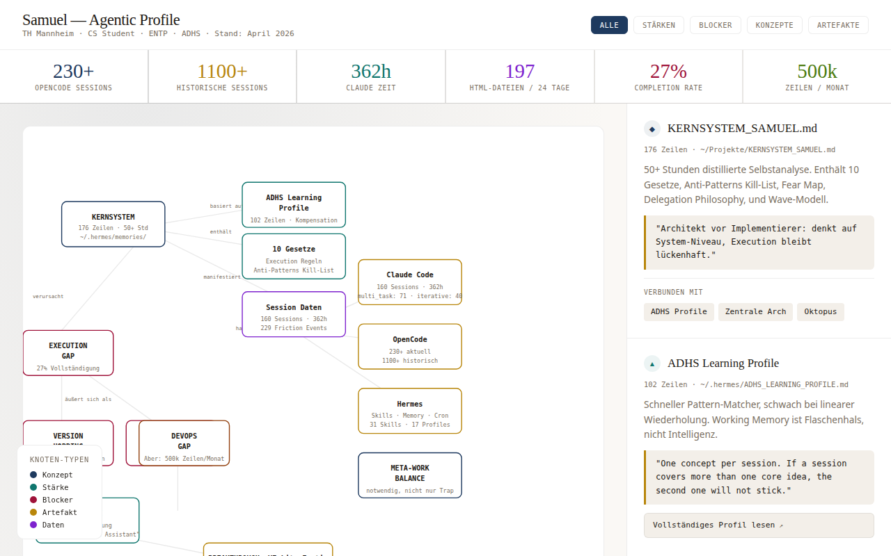

What is proven enough to say
Samuel has used real agentic systems for his own work, exposed breakdowns such as scope drift, wrong assumptions, weak verification, and overload, then converted those breakdowns into HAI controls.
Proof of practice
Not from a theory of agents. From building systems, watching them break, and learning how humans can take control back.
Evidence boundary
The claim here is deliberately narrow. This page proves lived practice and method formation. It does not pretend to be customer ROI data.
Samuel has used real agentic systems for his own work, exposed breakdowns such as scope drift, wrong assumptions, weak verification, and overload, then converted those breakdowns into HAI controls.
This is not external customer proof, not a universal model benchmark, and not a promise that every workflow needs the same system. The transferable claim is the method: make agent work visible, gated, owned, and verifiable.
Three case files
Each case answers the same buyer question: has Samuel already seen the shape of the problem I am about to have?
PortfolioTimeline turned a dense local build trail into a public-safe evidence surface. The point is not volume. The point is that agentic output can be sorted, inspected, and explained instead of living as private chaos.

Sidecar and the Tripwire Map are control work: read-before-edit rules, ambiguity gates, verification gates, commit approval, resource limits, and owner decisions. That is the core HAI lesson: the human needs operating boundaries, not just automation.

MetaMetaMeta and the Claude Insights timeline separate observations from evidence, task-local claims from transfer claims, and product proof from method proof. That is why HAI does not have to overclaim to be useful.

The working method
The deepest lesson from the local system is simple: do not begin with an architecture. Begin with one observable step.
What must become easier, faster, safer, or clearer for the human?
A file, log, screenshot, test, response, run, or decision that can be checked.
No vague progress. Either the artifact supports the next step, breaks it, or needs better measurement.
No dashboard, swarm, refactor, or framework until a real artifact demands it.
What this means for a client
Bring one workflow where context gets lost, agents overproduce, checks are weak, ownership is unclear, or the system feels too hard to trust. HAI turns that into a bounded setup: visible steps, gates, owner decisions, and verification.